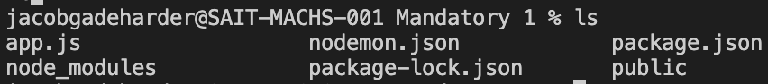

This command will change the working directory relative til the one you specify
Example: cd mandatory1/public/pages
This command will show you all the subfiles of the directory you are working in
Example:
Creates a new directory. You can specify the path
Example: mkdir (path)/newDirectory
Removes an empty directory. You can specify the path. If the directory is not empty use rm -R instead
Example: rmdir (path)/newDirectory
Removes a directory with subfiles. You can specify the path. This action is irreversible, meaning you can not restore the deleted files
Example: rm -R (path)/newDirectory
Meaning Super user do. It gives the user the rights to execute commands with administrator rights. Some commands require this
Example: sudo npm i nodemon